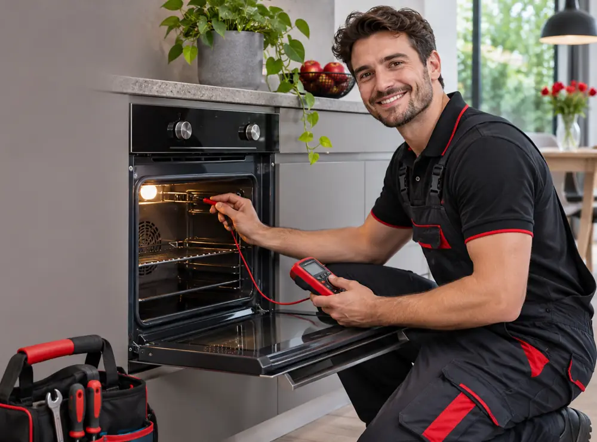

Elektro Specialist s.r.o. · Smečno
Oprava elektrických trub
Smečno
Potřebujete opravit spotřebič?
Servis elektrických trub na vaší adrese v oblasti Smečno. Trouba neohřívá nebo Nepeče rovnoměrně? Zavolejte nám, domluvíme další postup.
Výjezd zdarma. Diagnostika zdarma při schválené a provedené opravě. Případnou cenu diagnostiky při odmítnutí opravy sdělíme před objednáním. Podmínky služby.

Smečno · Nezávazná poptávka
Objednejte servis elektrických trub
Doplňte telefon, adresu a vyberte závadu. Město a typ spotřebiče jsou předvyplněné a lze je změnit.
Všechna města / Smečno / Trouby
Nejčastější závady – Trouby
- Trouba neohřívá
- Nepeče rovnoměrně
- Nefunguje ventilátor nebo gril
- Trouba vyhazuje jistič
Technik podle závady ověří jednotlivé režimy ohřevu, regulaci teploty, ventilátor, ovládání a stav připojení.
Co připravit před návštěvou technika?
Sdělte, zda je trouba vestavná, a vyberte závadu. Pokud vyhazuje jistič, spotřebič nepoužívejte do kontroly technikem.
Mezi značky, se kterými se běžně setkáváme, patří Bosch, Siemens, Electrolux, AEG, Mora, Gorenje, Whirlpool, Beko. Značku a konkrétní model můžete vybrat ve formuláři; dostupnost dílu ověříme předem.
Jak objednat servis v oblasti Smečno?
Vyberte závadu a zadejte adresu. Operátor s vámi upřesní termín a cenu. Ve Středočeském kraji běžně vyjíždíme do 24 hodin od potvrzení objednávky. Při naléhavé závadě lze podle dostupnosti technika domluvit rychlejší příjezd, případně do 60 minut.
Elektro Specialist má sídlo v Praze 2 a poskytuje výjezdový servis. Tato stránka neoznačuje samostatnou pobočku v městě Smečno.
Další druhy spotřebičů – Smečno
Servis elektrických trub ve Středočeském kraji · Havarijní servis NONSTOP · Naše realizace